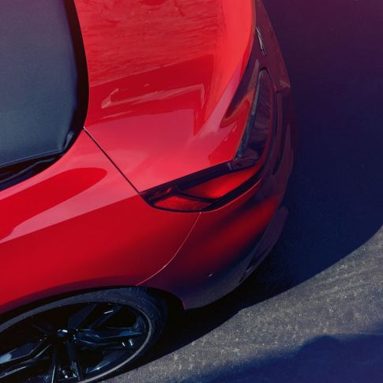

FRENTE
INTERIOR
FAROS TRASEROS
Los faros traseros con luces LED se alinean perfectamente con la cintura del vehículo, resultando en un diseño audaz y deportivo. La tercera Luz LED de frenos bien ubicada en el vidrio trasero brinda toda la seguridad en la conducción.
LATERAL
DESEMPEÑO

El flujo suave de potencia, la respuesta rápida y el manejo ágil generan un rendimiento estimulante con una ventaja deportiva, intensificando el placer de conducción.